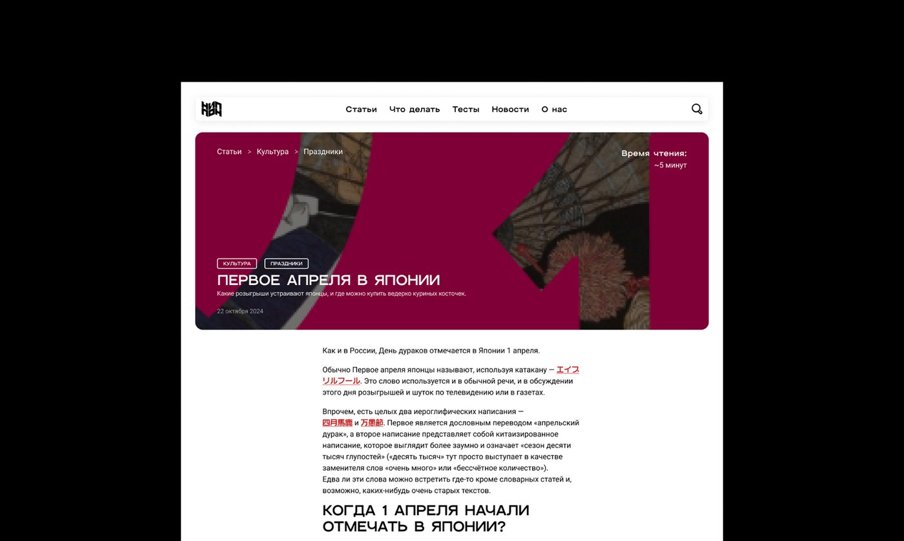
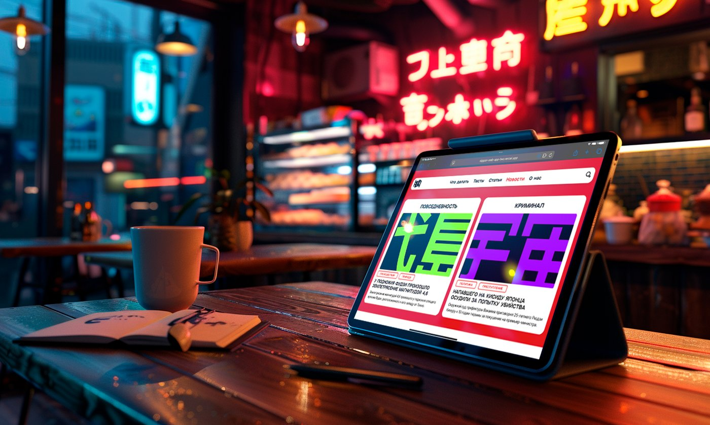
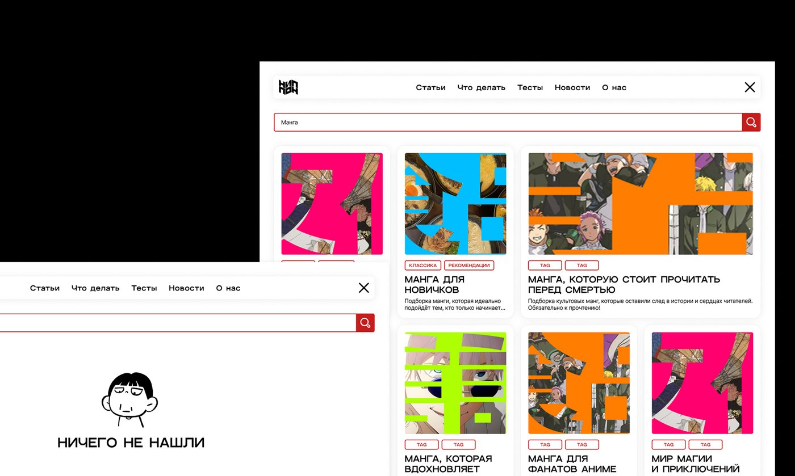
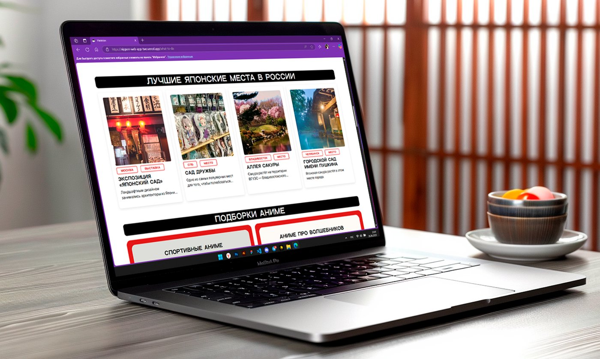
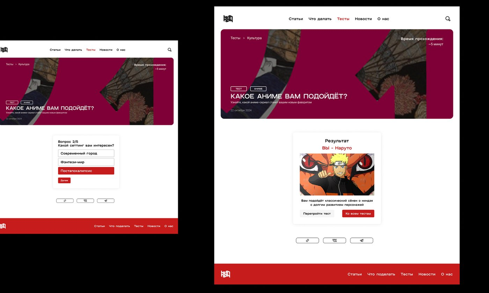
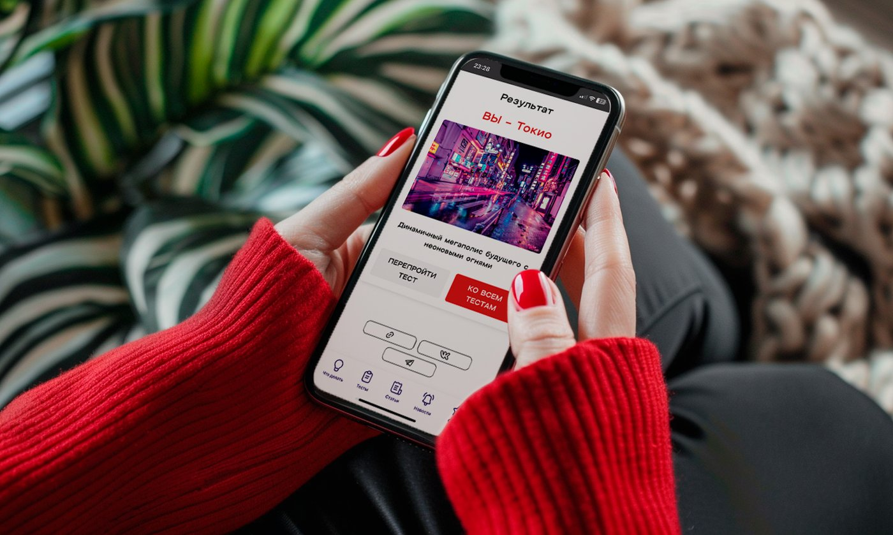

Ниппон
Медиапроект о японской культуре для тех, кто интересуется страной по-настоящему — от новостей и лайфстайла до путеводителей и разговорной лексики. Единая платформа вместо разрозненных каналов, с адаптивной вёрсткой и собственным изданием.
Смотреть оригинальный кейс →Контекст проекта
Интерес к Японии в России растёт, а контент о ней рассеян по десяткам разрозненных каналов — новости, культура, лайфстайл и путешествия живут отдельно друг от друга, без единого голоса и издания.
Задача команды — собрать собственное медиа, которое объединяет серьёзные новости и лёгкий лайфстайл под одной платформой и адаптируется под разные каналы дистрибуции.
Контент о Японии есть, но он однобокий
Каналы о культуре разрознены по площадкам и форматам: где-то только новости, где-то только развлечения. Целостной картины страны — от политики до повседневной жизни — ни один канал не давал.
Собрать медиа, объединяющее разные грани Японии
Спроектировать издание с гибкой структурой рубрик — от новостей до лайфстайла, — которое одинаково хорошо адаптируется под сайт, телеграм-канал и соцсети, сохраняя узнаваемый тон и визуальный стиль.
Что есть на платформе
- 01
Статьи и новости
О культуре и повседневности Японии — живо и близко к оригинальным источникам, с переводом ключевых терминов.
- 02
Тесты
Интерактивные тесты для развлечения и более глубокого погружения в тему выпуска.
- 03
Путеводители
Подборки мест и маршрутов для самостоятельных поездок по Японии.
- 04
Словарь для общения
Выжимка полезных повседневных слов и фраз для туриста и любителя культуры.
日本 — «Nippon»
Самоназвание Японии на японском языке. Подчёркивает, что издание рассказывает о настоящей Японии, а не о стереотипах извне.
«Не пон? А с нами пон»
Игривый и дружелюбный тон издания — объясняем сложные и неочевидные темы простым языком и с юмором, не теряя фактической точности.
Как медиа вышло в люди
- 01
Дзен
Первый разгонный канал с текстовыми форматами в Дзене — за счёт органического охвата платформы.
- 02
ВК
Статьи и форматы адаптированы под ВКонтакте с более коротким и цепляющим форматом подачи.
- 03
Telegram-канал
Ежедневная лента новостей и дайджест для самых заинтересованных читателей.
- 04
Реклама и партнёрства
Точечные публикации и интеграции с другими каналами о Японии для органического прироста аудитории.
Как это выглядит






«Собрали медиа о Японии, которое читают не из любопытства, а из системного интереса — от новостей до культуры и языка.»— Команда проекта
Что получилось в результате
Собрали и объединили разрозненный контент о Японии в одном издании — платформа продолжает расти, а команда получила экспертизу в оформлении медиа-продукта до полноценного бренда.